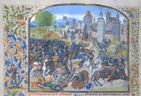
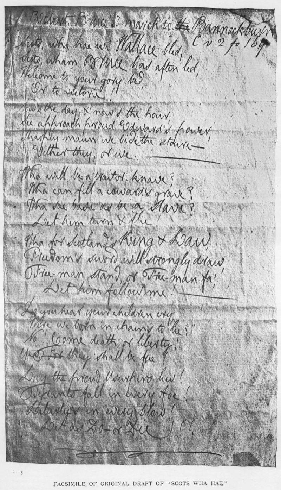
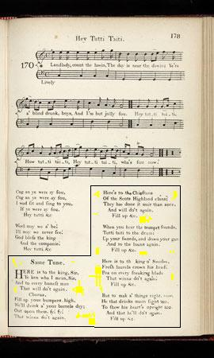

"Scots wha ha'e" and two related songs
"Ecossais, vous en qui passe" et deux chants apparentés
1° Bruce's Address to his Army before the Battle of Bannockburn (1314)
Harangue de Bruce avant la bataille de Bannockburn (1314)
Scots Musical Museum Volume VI, Song 577, page 608, 1796
Text by Robert Burns
Tune - Mélodie
"Hey tutti tatti"
Sequenced by Emily Ezust
|
To the tune:
Burns knew with certainty that this march (time signature 2/4) accompanied the soldiers on their march to Bannocksburn, since he titles the poem "Scots wha hae", "Robert Bruce's March to Bannockburn - To its ain tune". This has been rejected as improbable, as the first known printing of the air was in 1751, in James Oswald's "Caledonian Pocket Companion". However, James C. Dick, author of the ground-breaking work "The Songs of Robert Burns" published in 1903, is in favour of Burns's view, when he writes: "One of the earliest fragments of Scottish songs existing [ca 1486] is in the peculiar rhythm of the tune": Longe berdes hertles, Paynted hodes wytles, Gay cotes graceles Makyth Englond thrifteles." Burns's song was circulated as early as May 1794, when he mailed it to a London newspaper (without Music) that published it under his signature. I appeared later in Thomson's "Select Collection" in 1799 and 1802. |
A propos de la mélodie:
Burns était certain que cette marche (2/4) accompagnait les soldats de Bruce à Bannocksburn et il intitulait son poème "Scots wha hae", Marche de Robert le Bruce à Bannockburn, sur l'air du même nom". Cela a été contesté car la première publication imprimée de ce morceau date de 1751, dans le "Vadémécum" de James Oswald. Mais Burns a trouvé un défenseur en la personne de James C. Dick, l'auteur de l'ouvrage de référence "Les chants de Robert Burns" (1903), lequel écrit: "L'un des plus anciens fragments de chants écossais de l'époque [vers 1486] présente la même structure rythmique originale:" Longe berdes hertles, Paynted hodes wytles, Gay cotes graceles Makyth Englond thrifteles." La chanson de Burns devint populaire dès mai 1794, date à laquelle il l'envoya à un journal de Londres qui la publia sans la musique, sous sa signature. Elle parut plus tard dans la "Select Collection" de Thomson en 1799 et 1802. |
Sheet music - Partition

Robert Bruce at Bannockburn


1 Scots wha hae with Wallace bled! [1]
Scots wham Bruce has aften led!
Welcome to your gory bed,
Or to victory.
Now's the day and now's the hour,
See the front of battle lour,
See approach proud Edward's power
Chains and slaverie!
2 Wha will be a traitor knave?
Wha can fill a coward's grave?
Wha sae base as be a slave?
Let him turn and flee!
Wha for Scotland's king and law
Freedom's sword will strongly draw?
Freeman stand or Freeman fa'
Let him follow me
3 By oppression's woes and pains
By our sons in servile chains
We will drain our dearest veins,
But they shall be free,
Lay the proud usurper low, [2]
Tyrants fall in every foe
Liberty in every blow,
Let us do or die! [3]
1 Ecossais, vous en qui passe [1]
Le sang de Bruce et Wallace,
Quoi que Dieu de ce jour fasse,
Victoire ou trépas,
Saluez-le! C'est le moment
Du sanglant affrontement
Avec Edouard, l'instrument
Du servile état!
2 Qui craint de mourir en brave,
Qui veut vivre dans l'entrave,
Demeurer un vil esclave,
Passe son chemin!
Qui pour l'Ecosse et son roi
Et ses droits offre son bras,
Vivra libre ou bien mourra!
Qu'il soit l'un des miens!
3 De l'oppression et ses peines,
Nous et nos fils qu'on enchaîne,
Le sang coulant de nos veines
Doit nous affranchir!
Abattons l'usurpateur, [2]
Ses tyrans de défenseurs!
A nous, Liberté, l'honneur
De vaincre ou mourir! [3]
(Trad. Ch.Souchon (c) 2003)
[1] This song was written, in 1793, by Burns to fit an air (Hey tutie tatey) supposed to be
Robert Bruce's march at the Battle of Bannockburn (1314)
. The words "proud Edward's power" apply to the English King Edward II who was defeated at Bannockburn (June 1314), thus allowing Scottish independence to be reestablished.
The admission of this air in this collection is justifiable since its author was inspired by the aforementioned song, a true (Bachanalian) Jacobite song to the same tune, whose chorus "Do't again" is an incitation to rise up and restore the Stuart king (see below).
[2] Besides, it contains the word
"usurper"
, a Jacobite keyword. This present poem might have been written for performance at a meeting of the
"
Crochallan Fencibles
"
, an Edinburgh singing and drinking society with subversive sympathies into which Burns was introduced in 1788, by the printer of his poems, William Smellie who founded the club. The meetings were held at Daniel Douglas's tavern in Anchor Close. For performance at these meetings Burns wrote many subversive songs.
[3] The influence of the
American and French revolution
is perceptible in the words chosen by the poet (oppression, tyrant, liberty...). The possible model, "la Marseillaise" was composed by Rouget de L'Isle in April 1792 and broadcasted after the 10th of August. Burns wrote his anthem in June 1793, sent it, anonymously to the London Whig daily, the "Morning Chronicle" where it appeared on May 1794. In a letter to his editor, George Thomson transmitting his poem, Burns mentions as a source of inspiration, beside a visit to Bannockburn in 1793, "glowing ideas of some other struggles of the same sort, not quite so ancient". The letter ends with the conclusion: "So may God ever defend the cause of truth and liberty, as He did that day, amen!" The song is today the anthem of the Scottish Nationalist Party.
[1] Ce texte fut rédigé par Robert Burns pour être chanté sur un air (Hé Tutti tatti) supposé être la
marche de Robert le Bruce à la bataille de Bannockburn (1314)
. Le nom "Edouard" désigne le roi d'Angleterre Edouard II qui fut vaincu à Bannockburn (juin 1314), permettant le retour à l'indépendance de l'Ecosse.
La présence de ce morceau dans cette collection se justifie du fait qu'un chant Jacobite (bachique) utilise le même air. Dans le refrain "Recommencer" est une incitation à se soulever et restaurer les Stuart (voir ci-après).
[2] De plus, il y est question, d'
"usurpateur"
, un terme Jacobite, s'il en fut.
Le présent poème
pourrait avoir été composé pour une des séances des "
Crochallan Fencibles
", un groupe de buveurs mélomanes d'Edimbourg à tendance subversive, dans lequel Burns fut introduit en 1786 par l'éditeur de ses poèmes, William Smellie qui fonda le club. Les réunions avaient lieu à la taverne de Daniel Douglas dans l'Anchor Close. Pour agrémenter ces séances, Burns écrivit de nombreux chants subversifs.
[3] L'influence des
révolutions américaine et française
est perceptible dans le choix des mots de ce poème (oppression, tyran, liberté...). Le modèle possible, "la Marseillaise", fut composé par Rouget de l'Isle en avril 1792 et diffusé à partir du 10 août. Burns écrivit son hymne en juin 1793, l'envoya, sans nom d'auteur, au journal Whig de Londres, le "Morning Chronicle" où il parut en mai 1794. Dans une lettre à son éditeur, George Thomson, accompagnant l'envoi de ce poème, Burns indique avoir été inspiré lors d'une visite à Bannockburn en 1793, par la pensée "brûlante" d'autres batailles similaires, bien moins anciennes. Il termine sa lettre par cette conclusion: "Dieu défende la cause de la vérité et de la liberté, comme il le fit alors. Amen!" Ce chant est aujourd'hui l'hymne du Parti Nationaliste Ecossais.
2° "Hey Tutti Tatti" and "Here is to the King, Sir"
"Hey Tutti Tatti" et "A la santé du Roi!"
Scots Musical Museum" Volume II, page 178 under N° 170-2, 1788
Tune - Mélodie (Hey Tutti Tatti)Sequenced by Christian Souchon
|
1. Here's to the king, sir,
2. Here's to the chieftains
3. When you hear the trumpets sound
4. Here's to the king o' Swedes, [3]
5. But to make a' things right, now,
(Contributed by Paul ERNEST) |
 |
1. C'est à la santé du Roi,
2. A la santé des vaillants
3. Si le clairon retentit,
4. A la santé des Suédois
5. Mais, pour rétablir nos droits,
(Trad. Ch.Souchon (c)2004) |
|
[1]
Hey Tutti tatti
is a Non-Jacobite song quoted in the "Scots Musical Museum" Volume II, page 178 under N° 170-1.
It is supposed this unsigned drinking song was composed by Burns for performance at a meeting of the "Crochallan Fencibles" ( see note 2 to 1st song ). The 1st verse reads thus: 'Landlady, count the lawin, The day is near the dawin; Ye're a' blind drunk, boys, And I'm but jolly fou. Hey tutti taiti, How tutti taiti, Hey tutti taiti, wha's fou now?'... 'Tutti-taiti' is the sound of a trumpet and 'lawin' refers to a chit or bill from an inn. The second (Jacobite) set of lyrics mentionned above accompanied by the same tune is provided under the same N°170-2. [2] Bannockburn poem : As mentioned above, Burns, in his notes on the 'Museum', commented that he had "met the tradition universally over Scotland, and particularly about Stirling, in the neightbourhood of the scene, that this air was Robert Bruce's march at the battle of Bannockburn."
[3]
"Here's to the king o' Swedes"
: Since they mention the
King of Sweden
, the lyrics of "Here is to the King" may be dated from the years 1715-1718.
Ill may we never see, Here's to the king, And this good company!" More about Bachanalian songs : click here . |
[1]
Hey Tutti Tatti
: est un chant non-Jacobite qui figure dans le "Musée Musical Ecossais", Volume II page 178 sous le N° 170-1.
On suppose que cette chanson à boire anonyme est l'oeuvre de Burns qui la composa pour une séance des "Crochallan Fencibles" ( cf. note 2 du 1er chant ). Le premier couplet s'énonce ainsi: 'Patronne, je veux payer Car le jour va se lever. Vous êtes tous ivres morts Mais moi, pas encore. Ta ra ta ta ta ra ta ta Ta ra ta ta Qui veut boire encore?... Ta ra ta ta est le son d'un clairon,et "je veux payer " sous-entend "l'addition". Le second texte (Jacobite) cité plus haut accompagne le même morceau et est repéré par le même numéro (170-2). [2] Bannockburn poem : Comme on l'a dit plus haut, Burns, dans ses notes sur le "Musée", indique qu"'une tradition répandue dans toute l'Ecosse et en particulier dans la région de Stirling, non loin du lieu où les événements se déroulèrent, veut que cet air ait été la marche de Robert le Bruce à la bataille de Bannockburn."
[3]
"Here's to the king o' Swedes"
: Le texte de "A la santé du Roi!" date certainement des années 1715-1718 puisqu'il mentionne
le roi de Suède
.
A mal nous ne pensons point, En buvant au roi, ainsi Qu'à la compagnie!" A propos des "chants bachiques" : cliquer ici . |
3° The Land of the Leal
Le pays des cœurs purs
By Lady Nairne
Waltz "Hey tutti tatti"Sequenced by Christian Souchon
|
THE LAND OF THE LEAL [1]
1. I'm wearin' awa', John, [2] Like snaw-wreaths in thaw, John, I'm wearin' awa' To the land o' the leal. There's nae sorrow there, John There's neither cauld nor care, John, The day's aye fair In the land o' the leal. 2. To me ye hae bee true John, Your task's ended noo, John For near kythes my view O' the land o' the leal. Our bonnie bairn's there, John, She was baith gude and fair, John, And, oh! we grud'd her sair To the land o' the leal. 3. But dry that tearfu' ee John, Grieve na for her and me, John Frae sin and sorrow free I' the land o' the leal. Now fare ye weel, may ain John! This warld's cares are vain, John, We'll meet and aye be fein I' the land o' the leal. Source: The Scottish Minstrel (1821 - 1824) |
LE PAYS DES COEURS PURS [1]
1. Vois, mes forces s'en vont, Jean, [2] Comme neige qui fond, Jean, Je ne suis plus loin, pour sûr, Du pays des cœurs purs. Un pays sans chagrin, Jean, Où nul n'a froid, ni faim, Jean. Rien de pénible ou de dur Au pays des cœurs purs. 2. Prodigue de tes soins, Jean, Vois, ta tâche prend fin, Jean. J'aperçois déjà l'azur Du pays des cœurs purs. Notre fille si gaie, Jean Nous l'avions tant pleurée, Jean Quand elle a franchi le mur Du pays des cœurs purs. 3. Ah, sèche tes larmes, Jean Ne plains pas nos âmes, Jean Ni péché, ni maux obscurs Au pays des cœurs purs Oh, porte-toi bien, mon Jean Ici-bas tout est vain, Jean Nous nous reverrons un jour. Au pays des cœurs purs (Trad. Christian Souchon (c) 2010) |
|
[1]
Scottish Jacobitism
seems, at first glance, to be absent from this moving poem set by Lady Nairne to the same tune (Hey tutie tatey). In fact the word "leal" (loyal) repeated in each stanza is a Jacobite
keyword. To an exiled Jacobite the "land of the leal" refers to
the Highlands
, this lost paradise of the faithful, who believe in the true king to come.
Here of course it applies to the otherworld and the poem was added to a letter of condolence written to a friend, Mrs. Campbell Colquhoun on the occasion of the death of her infant daughter. [2] John and Jean : Written around 1798, the poem was for a long time ascribed to Burns (who died in July 1796), especially by his admirers who thought this pious stanzas could atone for many an irreverent verse penned by their national idol. A 1793 Edinburgh edition of Burns poems was augmented, ca 1811, with a re-written version of this piece, retitled "Burns's Deathbed Song", with the name "John" changed to "Jean" (for Jean Armour, Burns's wife). In the "Scottish Minstrel" (1821- 1824, where songs written by Lady Nairne are signed "Mrs Bogan of Bogan") the piece is marked as "Author Unknown", but in the "Lays of Strathearn" (1846), it appears under Lady Nairne's name. |
[1]
Le Jacobitisme écossais
semble, à première vue, absent de cet émouvant poème composé par Lady Nairne sur l'air de "Hey tutie tatey". Il apparaît cependant, car le mot "leal" (loyal) qui conclut chaque strophe appartient au vocabulaire Jacobite. Pour un Jacobite en exil, le "pays des hommes loyaux" (traduit ici par "cœurs purs"), ce sont
les Highlands
, ce paradis perdu de la loyauté et de la fidélité au roi qui reviendra.
Ici, il s'agit bien entendu de l' autre-monde et d'un poème annexé à une lettre de condoléances envoyée à une amie, Mme Campbell Colquhoun, à la mort de sa petite fille. [2] Jean et Jeanne : Composé vers 1798, le poème fut longtemps attribué à Burns (qui mourut en juillet 1796), surtout par ses admirateurs qui voyaient dans ces vers pieux de quoi racheter certains écrits irrévérencieux dont s'était rendue coupable leur idole. Une édition édimbourgeoise de 1793 des poèmes de Burns fur augmentée, vers 1811, d'une version réécrite du morceau, rebaptisée "Chant de Burns sur son lit de mort" où le prénom "Jean" était remplacé par "Jeanne" (par référence à Jeanne Armour, l'épouse de Burns). Dans le "Scottish Minstrel" (1821 - 1824, où les chants composés par Lady Nairne sont signés "Mrs Bogan of Bogan"), on donne l'auteur pour inconnu, mais dans les "Lais de Strathearn" (1846), le poème est signé Lady Nairne. |
|
|
|